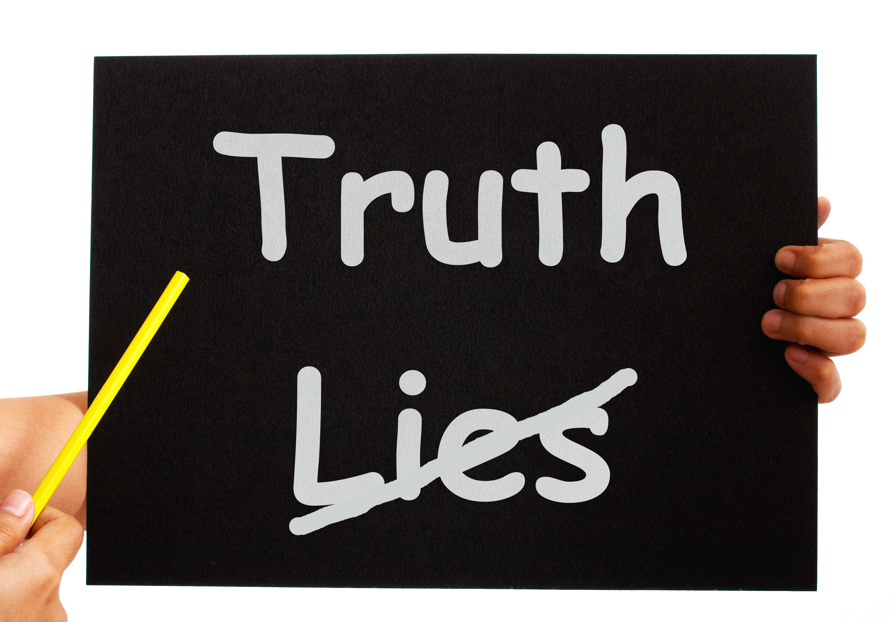

Kevin Zelada
My Strengths
My strenghts are in being a team player and also being a leader .
I also have a strength at being honest with one another because
I know how hard it is to tell to the truth to someone that you Care about.
I also have a strongsuit at being respectful and being responsible for my own actions .

My Weaknesses
My weaknesses are such as speaking in public and starting conversations with others .
But although these are weaknesses a hope that throughout TXT I learn how to become better at public speaking and how to start conversations with others .
I believe that I have gotten better at public speaking .